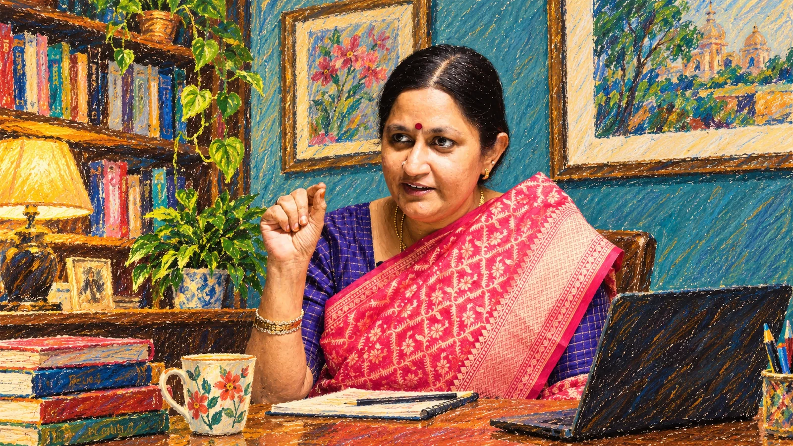

Biography · learning · professional life
A reader first. Then a voice.
Her public profile crosses literature, teaching, events, communications, entrepreneurship and strategic programme work. The site keeps that breadth visible instead of compressing it into a single job title.
Professional details follow documented public sources and the research dossier, with disputed points phrased conservatively.

Early reading
From colourful comics to a wider literary sea.
Her reading memory starts with Tinkle / Poonthalir, Amar Chitra Katha, Chacha Chaudhary, Chandamama and Champak, then moves through Balakumaran, Sujatha, Sivasankari and into a broader Tamil literary repertoire.
In a long-form interview, she describes Balakumaran as a turning point and later names La Sa Ra, Thi. Janakiraman, Vannadhasan, Vannanilavan, Jeyamohan, Puthumaipithan, Dilip Kumar, Prabanjan and others as part of a widening reading journey.
Chronology
A working life that keeps changing shape.
These milestones deliberately separate documented institutional roles from self-reported current-profile information.
Media & teaching
Public institutional profiles say she began with Doordarshan, taught at her alma mater, and created / headed an Events Management department at Loyola College.
Consulting, training & mentoring
Her experience spans corporate and educational consulting, BTL / ATL activity strategy, product launches, conferences, workshops, concerts, short-film and documentary work, creative advertising, media-presentation training and mentoring.
We Entertainments & Vivikta / Viviktha Naturals
Institutional profiles identify her as founder of We Entertainments and Viviktha Naturals; the supplied profiles use the spelling Vivikta. The latter is described around bee nurturing, honey and non-chemical personal-care traditions.
Under the Tree
An informal school-friends WhatsApp narration becomes the defining long-running audio-storytelling project.
Authorship expands
New books, children’s writing and the Endrendrum Anbudan periodical series broaden the public profile beyond narration.
Corporate storytelling & programme work
Her public professional profile describes her as a corporate storyteller and strategic program manager and lists experience with IITM Pravartak Technologies Foundation; the dossier treats this as self-reported profile data.

Reading philosophy
Stories are not summaries; they are invitations back to books.
Her interviews repeatedly return to the idea that narration should preserve the emotional weight of a story while still encouraging the listener to seek out the original book.
That is why authors and source texts remain visible throughout the site: book spines, reading tables, publisher links and credits stay visible rather than disappearing behind a personal-brand biography.